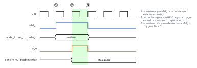

GPIO¶
Visão Geral¶
O GPIO Controller (rtl/perips/gpio/) liga o SoC aos recursos de entrada e saída da placa (Nexys A7 ou Nexys 4). Ele segue o modelo de um microcontrolador: os pinos são agrupados em portas, e o software escolhe a direção de cada pino e depois lê ou escreve o pino.
| Recurso | Bloco | Detalhe |
|---|---|---|
| Pmods JA, JB, JC, JD | 4 portas de 8 pinos | Entrada ou saída por pino (tri-state), interrupção por borda |
| LEDs LD0..LD15 | Porta de 16 pinos | Só saída |
| Chaves SW0..SW15 | Porta de 16 pinos | Só entrada, com filtro de repique (1 ms) e interrupção |
| Botões BTNU, BTND, BTNL, BTNR | Porta de 4 pinos | Só entrada, com filtro e interrupção (o BTNC é o reset do SoC) |
| 8 displays de 7 segmentos | seg7_controller |
Varredura em hardware, modo hexadecimal ou segmentos crus |
| LEDs RGB LD16 e LD17 | rgb_pwm |
PWM de 8 bits por cor, com brilho máximo de 1/8 |
A interrupção do GPIO é a fonte 4 do PLIC (PLIC_SOURCE_GPIO): o OU das interrupções habilitadas de todas as portas.
Organização do Hardware¶
| Arquivo | Função |
|---|---|
gpio_controller.vhd |
Decodifica o endereço, instancia os blocos e registra a leitura (handshake de latência 1) |
gpio_port.vhd |
Uma porta: registradores, sincronização dos pinos, filtro de repique e detecção de borda |
seg7_controller.vhd |
Multiplexação dos 8 dígitos, decodificador hexadecimal |
rgb_pwm.vhd |
Contador de PWM e comparação com o brilho de cada cor |
No soc_top, cada pino de Pmod é um inout: ele só é dirigido quando a sua direção é saída; caso contrário fica em alta impedância e pode ser lido. Os pinos de cada placa estão em fpga/constraints/nexys_a7.xdc e nexys4.xdc.
Pinos 2 e 3 do JA e a UART2
Enquanto a UART2 estiver habilitada (registrador EN em 0xA000_0008), os pinos 2 (bit 1) e 3 (bit 2) do JA pertencem a ela, e o que o GPIO programar para eles é ignorado; o registrador IN continua lendo os dois. Com a UART2 desabilitada, que é o estado após o reset, a porta JA inteira é GPIO. Ver UART2 no Pmod JA.
Mapa de Memória¶
O GPIO ocupa 0x2000_0000 a 0x2000_03FF. Cada bloco ocupa 64 bytes (addr[9:6] escolhe o bloco e addr[5:2] o registrador).
| Endereço | Bloco |
|---|---|
0x2000_0000 |
Porta JA (Pmod JA) |
0x2000_0040 |
Porta JB (Pmod JB) |
0x2000_0080 |
Porta JC (Pmod JC) |
0x2000_00C0 |
Porta JD (Pmod JD) |
0x2000_0100 |
Porta LED (LD0..LD15) |
0x2000_0140 |
Porta SW (SW0..SW15) |
0x2000_0180 |
Porta BTN (bit 0 = BTNU, 1 = BTND, 2 = BTNL, 3 = BTNR) |
0x2000_0200 |
Displays de 7 segmentos |
0x2000_0280 |
LEDs RGB |
Registradores de uma Porta¶
Os nomes seguem os microcontroladores (MSP430, STM32): IN, OUT e DIR para os dados, e registradores de set/clear/toggle atômicos, que mudam só os pinos marcados sem ler-modificar-escrever.
| Offset | Nome | Acesso | Descrição |
|---|---|---|---|
0x00 |
IN |
RO | Estado dos pinos (sincronizado com 2 flip-flops; com filtro nas chaves e botões). Na porta de LEDs, lê OUT |
0x04 |
OUT |
RW | Valor de saída |
0x08 |
DIR |
RW | Direção: bit 1 = saída, 0 = entrada. Fixo em 1 nos LEDs e em 0 nas chaves e botões |
0x0C |
OUTSET |
WO | OUT <= OUT or valor |
0x10 |
OUTCLR |
WO | OUT <= OUT and not valor |
0x14 |
OUTTGL |
WO | OUT <= OUT xor valor |
0x18 |
IE |
RW | Habilita a interrupção de cada pino |
0x1C |
IES |
RW | Borda da interrupção: 0 = subida, 1 = descida |
0x20 |
IFG |
RW | Flag de borda de cada pino (marcada mesmo com IE = 0); escrever 1 limpa |
Pmods: o bit i da porta é o pino i do conector na ordem 1, 2, 3, 4, 7, 8, 9, 10 (os pinos 5/11 são GND e 6/12, 3,3 V).
Displays de 7 Segmentos (0x2000_0200)¶
| Offset | Nome | Descrição |
|---|---|---|
0x00 |
CTRL |
Bit 0 RAW: 0 = modo hexadecimal, 1 = segmentos crus |
0x04 |
HEX |
Nibble i → dígito i (dígito 0 à direita) |
0x08 |
RAW_LO |
Segmentos crus dos dígitos 0..3 (byte i = dígito i) |
0x0C |
RAW_HI |
Segmentos crus dos dígitos 4..7 |
0x10 |
DP |
Ponto decimal de cada dígito (modo hexadecimal) |
0x14 |
EN |
Dígitos ligados; 0 após o reset (displays apagados) |
Segmentos crus: bit 0 = a, ..., bit 6 = g, bit 7 = ponto; 1 = aceso. O controlador acende um dígito por vez durante 2^14 ciclos (164 µs), o que dá cerca de 760 quadros por segundo.
LEDs RGB (0x2000_0280)¶
| Offset | Nome | Descrição |
|---|---|---|
0x00 |
RGB0 |
LD16: 0x00RRGGBB, brilho 0..255 de cada cor |
0x04 |
RGB1 |
LD17 |
Os LEDs RGB da placa são muito fortes ligados direto, então o PWM tem 2048 passos e o brilho (0..255) cobre só os 256 primeiros: o brilho máximo é 1/8 do LED ligado direto (generic PWM_DIM = 3). Cada passo dura 4 ciclos, o que dá cerca de 12 kHz.
Funcionamento de uma Porta¶
- Sincronização: os pinos externos passam por dois flip-flops antes de qualquer uso (evita metaestabilidade).
- Filtro de repique (chaves e botões): a cada 1 ms o valor é amostrado; um pino só muda quando duas amostras seguidas concordam.
- Borda: o valor atual é comparado com o do ciclo anterior; a borda escolhida em
IESmarcaIFG. - Interrupção:
irq = OU(IFG and IE). O tratador lêIFG, escreve de volta os bits que tratou (limpando-os) e o PLIC é liberado. Uma borda que chega no mesmo ciclo da limpeza não se perde.
Uso pelo Software¶
A HAL fica em fpga/sw/platform/bsp/hal/hal_gpio.h:
#include "hal/hal_gpio.h"
hal_gpio_set_dir(GPIO_JA, 0, GPIO_OUTPUT); // pino 1 do Pmod JA como saída
hal_gpio_write(GPIO_JA, 0, 1); // liga o pino
if (hal_gpio_read(GPIO_BTN, GPIO_BTN_UP)) { } // lê o BTNU
hal_leds_write(0x00FF); // LEDs
uint16_t sw = hal_switches_read(); // chaves
hal_seg7_write_dec(1234); // displays: 1234
hal_rgb_set(RGB_LD16, 0, 255, 0); // LD16 verde
hal_gpio_irq_enable(GPIO_BTN, GPIO_BTN_LEFT, GPIO_EDGE_RISING); // interrupção (PLIC fonte 4)
A referência completa das funções e dois programas de exemplo estão em HAL → GPIO.
O programa fpga/sw/tests/gpio_test.c testa todos os blocos na placa (com autoverificação pela UART) e depois serve de demonstração: os LEDs seguem as chaves, os botões geram interrupções contadas no display e mudam a cor dos LEDs RGB.
Protocolo de Handshake¶
O GPIO Controller implementa um protocolo handshake com latência 1 para comunicação com o barramento do SoC:

rdy_o é registrado na borda seguinte ao vld_i, junto com a atualização da saída (leitura) ou do registrador (escrita).| Ciclo | vld_i |
we_i |
rdy_o |
Ação |
|---|---|---|---|---|
| N | 1 | 0/1 | 0 | CPU inicia a transação; numa escrita, o registrador é atualizado na borda seguinte |
| N+1 | 0 | - | 1 | GPIO responde (numa leitura, com o dado registrado) |
| N+2 | - | - | 0 | Idle novamente |
Verificação¶
O testbench sim/perips/unit/test_gpio_controller.py (8 testes) usa o wrapper sim/perips/wrappers/gpio_controller_wrapper.vhd, com filtro, varredura e PWM acelerados:
Os testes cobrem o estado de reset, a porta de LEDs, a direção dos Pmods, o filtro das chaves, as interrupções dos botões (borda, IE, limpeza de IFG), os modos dos displays, o ciclo de trabalho do PWM e 300 operações aleatórias comparadas com um modelo.